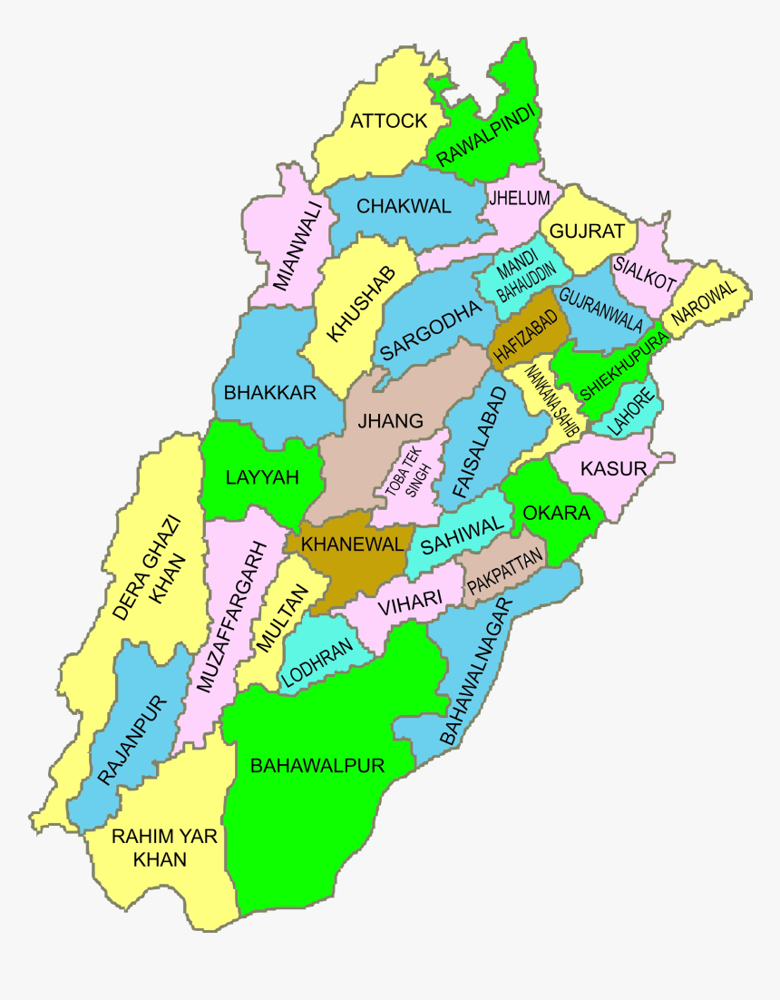

<!DOCTYPE html> 
<html>
</html>
    <head>
        <meta charset="utf-8">
      <title> All about Punjab</title>
	  <style>
	  #head-phones {
	        color: white;  
	        background-color:rgb(0, 204, 102);
	        text-align: center;
			font-family: cursive;
	  }
	  
	  </style>
	  
	  </head>
	  <body>
	  
	  <div id=head-phones><h2> punjab</h2>
	  
	  
	  <p><p>Punjab is the most populous province of Pakistan<br>,
		 containing more than half the country's total population<br>
		 as well as several of its major cities: Lahore, Faisalabad,<br>
		 Rawalpindi, Multān, and Gujranwala. There is considerable<br>
		 rural-to-urban migration in the province, especially to the larger cities.
		 
		 </p>
		 
		 
		
	  
	  
	  </p>
	  
	  </div>
	  </body>